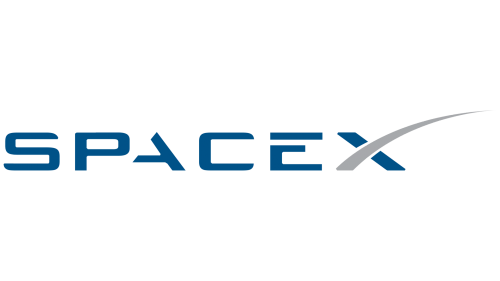

SpaceX

SpaceX är ett amerikanskt företag inom privat rymdfart som grundades år 2002 av entreprenören Elon Musk. SpaceX blev 2008 det första privata företaget som uppnådde omloppsbana med en raket driven av flytande bränsle. Företaget erbjuder transporter till omloppsbana runt jorden med raketerna Falcon 9 och Falcon Heavy. SpaceX har dessutom utvecklat rymdkapseln SpaceX Dragon som används för att förse den internationella rymdstationen ISS med förnödenheter. 2019 är det tänkt att Dragon även ska transportera astronauter till ISS med hjälp av Dragon V2-rymdfarkosten. Företaget finansieras genom den förmögenhet Elon Musk gjort genom tidigare startade företag som PayPal och genom anslag från NASA:s program COTS som syftar till att stimulera kommersiell rymdfart.
Det långsiktiga målet är raketer som är återanvändbara och, enligt Elon Musk, att möjliggöra kolonisering av planeten Mars. SpaceX tänker bland annat återanvända raketer genom Grasshopper-konceptet. Grasshopper-teknologin går ut på att ett eller flera raketsteg av en flerstegsraket landar säkert på jorden efter användning. På så sätt slipper man bygga en ny raket för varje raketuppskjutning och sparar på så sätt pengar. Det är meningen att Falcon 9, Falcon Heavy och Dragon V2 ska kunna använda Grasshopper-konceptet när det är färdigutvecklat. Den 22 december 2015 lyckades SpaceX för första gången med en vertikal landning. Det är den raket som är först i historien med att flyga långt ut i rymden, leverera material till en rymdstation och sedan flyga tillbaka och landa på jorden. Den 31 mars 2017 gjorde företaget den första uppskjutningen med en raket vars första steg hade använts en gång tidigare. Efter uppskjutningen lyckades raketsteget återigen landa på en pråm ute på Atlanten.